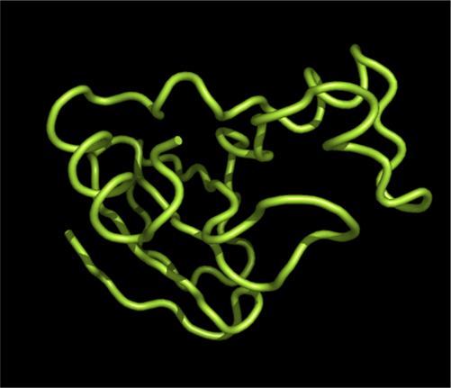
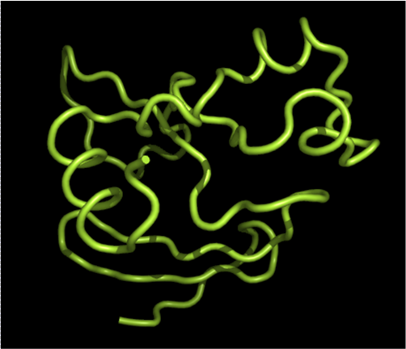

libRosetta Refold DemoThis is a demo program that reads a PDB file, tweaks the conformation of the protein, refolds the protein to update the tweaked atom positions, and writes the tweaked protein to a PDB file. // libRosetta headers #include <rosetta/conformation/protein/Protein.hh> #include <rosetta/conformation/protein/io.hh> #include <rosetta/conformation/TorsionAngle.hh> #include <rosetta/conformation/builder/ProteinBuilder.hh> #include <rosetta/io/pdb/read_pdb.hh> #include <rosetta/options/option.hh> // Numeric headers #include <numeric/conversions.hh> // Standard library headers #include <cstdlib> #include <fstream> #include <iostream> #include <string> /// @brief Demo of reading, tweaking, refolding, and writing a protein int main( int argc, char * argv[] ) { using namespace rosetta; using namespace rosetta::conformation; using namespace rosetta::conformation::builder; using namespace rosetta::conformation::protein; using namespace rosetta::io::pdb; using namespace rosetta::options; using namespace std; using numeric::conversions::radians; typedef ProteinBuilder::Proteins Proteins; // Get command line options options::initialize().load( argc, argv, true ); options::process(); // Read the PDB Proteins proteins( read_pdb( argv[1] ) ); // Grab the first protein Protein & protein( **proteins.begin() ); // Tweak the conformation in 2 places just for the fun of it protein.phi( 20 ) += radians( +40.0 ); // +40 degrees protein.phi( 80 ) -= radians( -40.0 ); // -40 degrees // Refold the protein protein.refold_N2C(); // N2C direction fullatom refold // Write the PDB string const output_file( protein.id() + ".tweaked.pdb" ); std::ofstream pdb_stream( output_file.c_str() ); pdb_write( pdb_stream, protein ); } |
Results on 1brs.pdb

